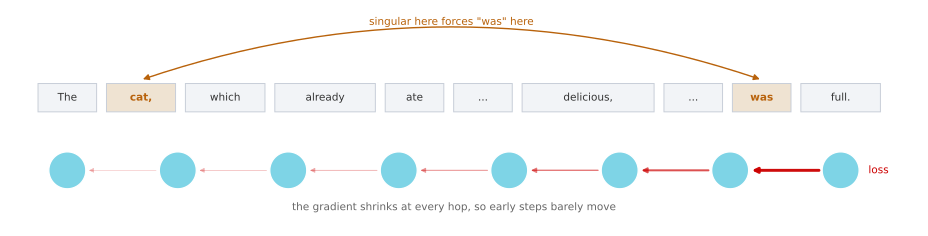
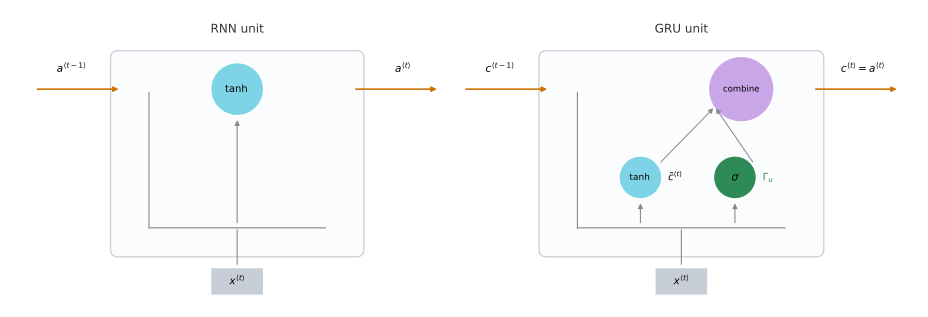
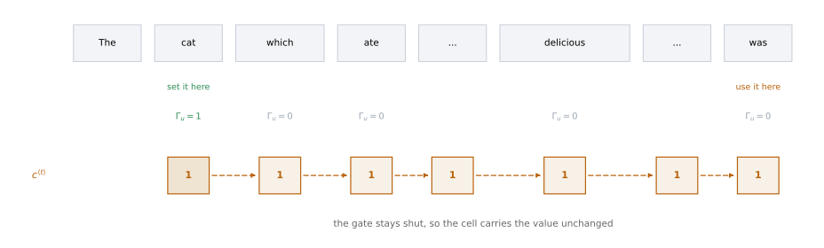
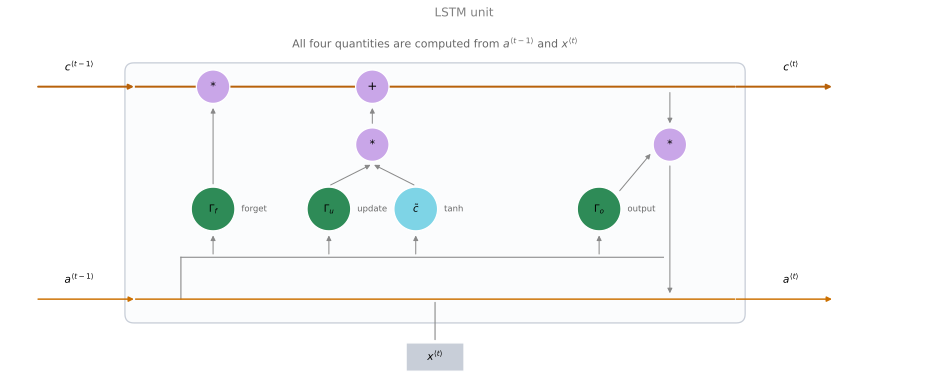
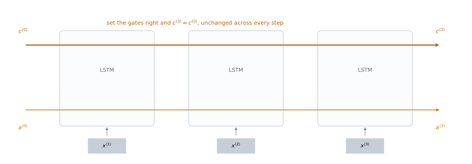

Vanishing Gradients, GRUs, and LSTMs
deep-learning
sequence-models
rnn
gru
lstm
vanishing-gradients
Why a basic RNN cannot hold information across a long sentence, and how the gated recurrent unit and the long short term memory unit fix it.
You have seen how RNNs work, how they apply to problems like named entity recognition and language modeling, and how backpropagation trains them. One of the problems with the basic RNN algorithm is that it runs into vanishing gradients.
Vanishing Gradients with RNNs
Take a language modeling example. Consider this sentence.
The cat, which already ate a bunch of food that was delicious, …, was full.
To be consistent, because cat is singular, it has to be “the cat was”. If instead the sentence had been about cats, it would read
The cats, which already ate a bunch of food that was delicious, …, were full.
So it should be “cat was” or “cats were”. This is an example of language having very long-term dependencies, where a word much earlier can affect what needs to come much later in the sentence. The basic RNN seen so far is not very good at capturing dependencies like this.
To see why, remember the vanishing gradients problem from training very deep networks. In a very deep network, say 100 layers or more, you carry out forward propagation from left to right and then backpropagation. The gradient from the output \(y\) has a very hard time propagating back to affect the weights of the earlier layers.
An RNN has the same problem. Forward propagation goes from left to right and backpropagation goes from right to left, and it can be quite difficult, because of the same vanishing gradients problem, for the errors associated with the later time steps to affect the computations that are earlier.
In practice this means it might be difficult to get the network to realize that it needs to memorize whether it saw a singular noun or a plural noun, so that later in the sequence it can generate either was or were accordingly. In English the material in the middle can be arbitrarily long, so you might need to hold on to the singular or plural fact for a very long time before you get to use it.
Because of this, the basic RNN model has many local influences. The output \(\hat{y}^{\langle 3 \rangle}\) is mainly influenced by values close to \(\hat{y}^{\langle 3 \rangle}\), and a value somewhere in the middle is mainly influenced by inputs somewhat close to it. It is difficult for an output to be strongly influenced by an input that was very early in the sequence, because whatever the output was, right or wrong, it is very hard for the error to backpropagate all the way to the beginning of the sequence and modify how the network does its earlier computations. Without addressing this, RNNs tend not to be very good at capturing long-range dependencies.
Exploding Gradients
The discussion so far has focused on vanishing gradients, but when training very deep networks there are also exploding gradients, where during backpropagation the gradients do not just decrease exponentially but may increase exponentially with the number of layers you go through.
Vanishing gradients tends to be the bigger problem with training RNNs. When exploding gradients happen, though, it can be catastrophic, because the exponentially large gradients can cause your parameters to become so large that the network parameters get really messed up.
Exploding gradients are easier to spot, because the parameters just blow up. You will often see NaNs, meaning not a number, the result of a numerical overflow in your network computation. If you do see them, one solution is gradient clipping. All that means is that you look at your gradient vectors, and if one is bigger than some threshold, you rescale it so that it is not too big, clipping it according to some maximum value. That is a relatively robust solution and takes care of exploding gradients.
Vanishing gradients are much harder to solve, and that is the subject of the rest of this page. An RNN processing data over 1,000 time steps, or over 10,000 time steps, is basically a 1,000 layer or a 10,000 layer network, so it runs into these problems too.
Review Questions
1. In “The cat, which already ate a bunch of food that was delicious, was full”, which two words have to agree, and why is that hard for a basic RNN?
TipAnswer
cat and was have to agree in number. It is hard because the material between them can be arbitrarily long, so the network would have to memorize the singular fact for many time steps. The gradient that would teach it to do so has to travel back across all of those steps, and it shrinks at every one, so the early computations barely get corrected.
1. Why is an RNN over 10,000 time steps described as being like a 10,000 layer network?
TipAnswer
Because backpropagation through time runs the same recursive calculation once per time step, exactly the way a deep network runs it once per layer. The depth that matters for the gradient is the length of the sequence, so a long sequence produces the same vanishing gradient behavior a very deep network would.
1. Which problem is easier to detect, and what is the standard fix for it?
Vanishing gradients, fixed by gradient clipping
Exploding gradients, fixed by gradient clipping
Exploding gradients, fixed by a gated unit
Vanishing gradients, fixed by a smaller learning rate
TipAnswer
b. Exploding gradients announce themselves, because the parameters blow up and you see NaNs from numerical overflow. Rescaling any gradient vector above a threshold, which is gradient clipping, is a robust fix. Vanishing gradients are the harder problem and are what gated units address.
Gated Recurrent Unit
The gated recurrent unit is a modification to the RNN hidden layer that makes it much better at capturing long-range connections and helps a lot with the vanishing gradient problem. Many of the ideas here are due to Chung, Gulcehre, Cho, and Bengio (2014).
You have already seen the formula for the activation at time \(t\) of an RNN, which is the activation function applied to \(W_a\) times the previous activation and the current input, plus a bias.
\[a^{\langle t \rangle} = \tanh\!\left(W_a\,[\,a^{\langle t-1 \rangle},\, x^{\langle t \rangle}\,] + b_a\right)\]
Drawn as a picture, the RNN unit is a box that takes in \(a^{\langle t-1 \rangle}\) and \(x^{\langle t \rangle}\), puts them through a linear calculation and then a tanh, and computes the output activation \(a^{\langle t \rangle}\), which might also be passed to a softmax to output \(\hat{y}^{\langle t \rangle}\).
The GRU introduces a new variable \(c\), which stands for cell, for memory cell. What the memory cell does is provide a bit of memory, so that it can remember, for example, whether cat was singular or plural, and still have that available much further into the sentence.
At time \(t\) the memory cell holds some value \(c^{\langle t \rangle}\). For the GRU the unit outputs an activation \(a^{\langle t \rangle}\) that is equal to \(c^{\langle t \rangle}\). The two symbols are kept separate anyway, because in the LSTM later on they become two different values.

These are the equations that govern the computation of a GRU unit. At every time step you consider overwriting the memory cell with a candidate value \(\tilde{c}^{\langle t \rangle}\).
\[\tilde{c}^{\langle t \rangle} = \tanh\!\left(W_c\,[\,c^{\langle t-1 \rangle},\, x^{\langle t \rangle}\,] + b_c\right)\]
Then comes the important idea of the GRU, which is a gate, written \(\Gamma_u\), where \(u\) stands for update. This is a value between 0 and 1. To develop your intuition, think of the gate value as being always 0 or 1, although in practice you compute it with a sigmoid.
\[\Gamma_u = \sigma\!\left(W_u\,[\,c^{\langle t-1 \rangle},\, x^{\langle t \rangle}\,] + b_u\right)\]
The sigmoid is always between 0 and 1, and for most of the possible range of its input it is either very close to 0 or very close to 1, so thinking of \(\Gamma_u\) as being 0 or 1 most of the time is a reasonable intuition. The letter \(\Gamma\) was chosen because a gated fence has a lot of shapes in it that look like a capital gamma, and because \(\Gamma\) is the Greek letter G, as in G for gate.
The gate then decides whether or not the candidate actually replaces the cell.
\[c^{\langle t \rangle} = \Gamma_u * \tilde{c}^{\langle t \rangle} + \left(1 - \Gamma_u\right) * c^{\langle t-1 \rangle}\]
\[a^{\langle t \rangle} = c^{\langle t \rangle}\]
Notice what the gate does. If \(\Gamma_u = 1\), the equation sets the new value of \(c^{\langle t \rangle}\) equal to the candidate, so go ahead and update. If \(\Gamma_u = 0\), the first term vanishes, the second term becomes \(1 * c^{\langle t-1 \rangle}\), and the cell just hangs on to its old value.
NoteElement-wise multiplication
The asterisk in these equations is element-wise multiplication, not matrix multiplication. The correction published alongside the lecture makes this explicit for the last line, \(c^{\langle t \rangle} = \Gamma_u * \tilde{c}^{\langle t \rangle} + (1 - \Gamma_u) * c^{\langle t-1 \rangle}\).
How the Gate Holds a Memory
Think of the memory cell as being set to 0 or 1 depending on whether the subject of the sentence is singular or plural. Say singular sets it to 1 and plural sets it to 0. The GRU then memorizes that value all the way along, so that much later in the sentence it is still 1, which tells the model to choose was.
The job of \(\Gamma_u\) is to decide when to update the value. When you see the phrase “the cat”, you know you are talking about a new concept, the subject of the sentence, and that is a good time to update the bit. Later, once “the cat was full” is done, you no longer need to remember it and can forget it.

This is why the GRU helps with vanishing gradients. The gate is quite easy to set to 0, as long as the quantity inside the sigmoid is a large negative value, so up to numerical round-off the update gate is essentially 0. When that is the case, the update equation is just setting \(c^{\langle t \rangle} = c^{\langle t-1 \rangle}\), and the value of the cell is maintained pretty much exactly even across many time steps. That allows the network to learn very long-range dependencies, such as cat and was being related even when a lot of words separate them.
Vectors, Not Single Bits
In these equations \(c^{\langle t \rangle}\) can be a vector. If you have a 100-dimensional hidden activation value, then \(c^{\langle t \rangle}\) is 100-dimensional, \(\tilde{c}^{\langle t \rangle}\) has the same dimension, and \(\Gamma_u\) has the same dimension too. In that case the asterisks really are element-wise multiplication.
If the gate is a 100-dimensional vector, it is really a 100-dimensional vector of bits, mostly 0 and 1, that tells you which of the 100 dimensions of the memory cell you want to update. In practice \(\Gamma_u\) will not be exactly 0 and 1 and will sometimes take values in between, but it is convenient for intuition to think of it as mostly taking on values that are pretty much exactly 0 or pretty much exactly 1.
What the element-wise multiplications do is tell the GRU which dimensions of the memory cell vector to update at every time step. You can keep some bits constant while updating others. Maybe one bit remembers whether the cat was singular or plural, and some other bit remembers that you are talking about food, because the sentence mentioned eating, and you would expect to hear later about whether the cat is full.
Full GRU
What is above is a slightly simplified GRU. The full unit makes one change to the equation that computes the candidate value, adding one more gate, \(\Gamma_r\), where \(r\) stands for relevance. This gate tells you how relevant \(c^{\langle t-1 \rangle}\) is to computing the next candidate for \(c^{\langle t \rangle}\), and it is computed much as you would expect, with a new parameter matrix.
\[\Gamma_r = \sigma\!\left(W_r\,[\,c^{\langle t-1 \rangle},\, x^{\langle t \rangle}\,] + b_r\right)\]
\[\tilde{c}^{\langle t \rangle} = \tanh\!\left(W_c\,[\,\Gamma_r * c^{\langle t-1 \rangle},\, x^{\langle t \rangle}\,] + b_c\right)\]
\[\Gamma_u = \sigma\!\left(W_u\,[\,c^{\langle t-1 \rangle},\, x^{\langle t \rangle}\,] + b_u\right)\]
\[c^{\langle t \rangle} = \Gamma_u * \tilde{c}^{\langle t \rangle} + \left(1 - \Gamma_u\right) * c^{\langle t-1 \rangle}\]
Why have \(\Gamma_r\) at all, rather than the simpler version? Over many years researchers experimented with many possible versions of how to design these units, trying to get longer-range connections, to model long-range effects, and to address vanishing gradients. The GRU is one of the versions researchers converged on and found robust and useful for many different problems. You could try to invent new versions of these units, but the GRU is a standard one and is commonly used.
One note on notation. The literature sometimes uses an alternative notation, writing \(\tilde{h}\), \(u\), \(r\), and \(h\) to refer to these same quantities. The notation used here is meant to stay consistent between GRUs and LSTMs.
Review Questions
1. What happens to the memory cell when \(\Gamma_u = 0\), and why does that help with vanishing gradients?
TipAnswer
The update equation becomes \(c^{\langle t \rangle} = 0 * \tilde{c}^{\langle t \rangle} + 1 * c^{\langle t-1 \rangle}\), which is just \(c^{\langle t \rangle} = c^{\langle t-1 \rangle}\). The cell copies its previous value exactly. Because the value passes through unchanged rather than being repeatedly multiplied down, it survives across many time steps and the network can connect distant words.
1. In the equation \(c^{\langle t \rangle} = \Gamma_u * \tilde{c}^{\langle t \rangle} + (1 - \Gamma_u) * c^{\langle t-1 \rangle}\), what kind of multiplication is the asterisk, and why does that matter?
TipAnswer
It is element-wise multiplication. It matters because \(\Gamma_u\) is a vector of the same dimension as the cell, so the gate decides independently for each dimension whether to update it or hold it. That is what lets one bit remember the singular or plural fact while another bit tracks something else entirely.
1. What does the relevance gate \(\Gamma_r\) do, and which equation does it appear in?
TipAnswer
It says how relevant the previous cell value \(c^{\langle t-1 \rangle}\) is to computing the next candidate. It appears only inside the candidate equation, multiplying \(c^{\langle t-1 \rangle}\) element-wise before it goes into the tanh. It is the one thing that separates the full GRU from the simplified version.
1. If the hidden activation is 100-dimensional, what are the dimensions of \(\tilde{c}^{\langle t \rangle}\) and \(\Gamma_u\)?
100 and 1
100 and 100
1 and 100
100 and 10,000
TipAnswer
b. All of \(c^{\langle t \rangle}\), \(\tilde{c}^{\langle t \rangle}\), and \(\Gamma_u\) have the same dimension as the hidden activation. That is exactly what makes the element-wise product meaningful, since the gate is a per-dimension decision about which bits of the memory cell to overwrite.
Long Short Term Memory
The other unit that lets you learn very long-range connections is the LSTM, the long short term memory unit, and it is even more powerful than the GRU. It is due to Hochreiter and Schmidhuber (1997), a seminal paper with a huge impact on sequence modeling, although it is one of the more difficult ones to read, since it goes quite a lot into the theory of vanishing gradients.
For the GRU there were two gates, the update gate and the relevance gate, and \(a^{\langle t \rangle} = c^{\langle t \rangle}\). For the LSTM that last equality no longer holds. The candidate is computed from \(a^{\langle t-1 \rangle}\) rather than \(c^{\langle t-1 \rangle}\), and the relevance gate is dropped. You can build a variation of the LSTM that puts it back, but the more common version does not bother.
\[\tilde{c}^{\langle t \rangle} = \tanh\!\left(W_c\,[\,a^{\langle t-1 \rangle},\, x^{\langle t \rangle}\,] + b_c\right)\]
The other new property is that instead of one update gate controlling both terms, there are two separate gates. Instead of \(\Gamma_u\) and \(1 - \Gamma_u\) there is \(\Gamma_u\) and a forget gate \(\Gamma_f\), and there is also a new output gate \(\Gamma_o\).
\[\Gamma_u = \sigma\!\left(W_u\,[\,a^{\langle t-1 \rangle},\, x^{\langle t \rangle}\,] + b_u\right)\]
\[\Gamma_f = \sigma\!\left(W_f\,[\,a^{\langle t-1 \rangle},\, x^{\langle t \rangle}\,] + b_f\right)\]
\[\Gamma_o = \sigma\!\left(W_o\,[\,a^{\langle t-1 \rangle},\, x^{\langle t \rangle}\,] + b_o\right)\]
\[c^{\langle t \rangle} = \Gamma_u * \tilde{c}^{\langle t \rangle} + \Gamma_f * c^{\langle t-1 \rangle}\]
\[a^{\langle t \rangle} = \Gamma_o * c^{\langle t \rangle}\]
Splitting the update and the forget gate gives the memory cell the option of keeping the old value \(c^{\langle t-1 \rangle}\) and just adding the new value \(\tilde{c}^{\langle t \rangle}\) to it, rather than having to trade one off against the other. So there are three gates, update, forget, and output, which makes the LSTM a bit more complicated than the GRU and places the gates in slightly different spots.

The picture is traditional for explaining these units, and the one here follows the shape of the diagram in the blog post Understanding LSTM Networks (2015). If the picture is too complicated, do not worry about it. The equations are easier to understand than the picture, and the key thing to take away is that \(a^{\langle t-1 \rangle}\) and \(x^{\langle t \rangle}\) come together to compute the forget gate, the update gate, and the output gate, and also go through a tanh to compute \(\tilde{c}^{\langle t \rangle}\). Those values are then combined with element-wise multiplies to get \(c^{\langle t \rangle}\) from \(c^{\langle t-1 \rangle}\).
Chaining the Units
Hook a bunch of these up in a row, connecting them in time, so that the output \(a\) from one time step is the input at the next, and similarly for \(c\).

The interesting element is the line along the top. So long as you set the forget and the update gates appropriately, it is relatively easy for the LSTM to take some value \(c^{\langle 0 \rangle}\) and pass it all the way to the right, so that \(c^{\langle 3 \rangle}\) equals \(c^{\langle 0 \rangle}\). This is why the LSTM, and the GRU, are very good at memorizing certain values even for a long time, holding real values in the memory cells across many time steps.
Peephole Connections
There are a few variations people use. Perhaps the most common is that instead of the gate values depending only on \(a^{\langle t-1 \rangle}\) and \(x^{\langle t \rangle}\), people also sneak in the value \(c^{\langle t-1 \rangle}\). This is called a peephole connection, and it can go into all three of the gate computations.
One technical detail is that if these are 100-dimensional vectors, then the fifth element of \(c^{\langle t-1 \rangle}\) affects only the fifth element of the corresponding gates. The relationship is one to one, so it is not that every element of the 100-dimensional \(c^{\langle t-1 \rangle}\) can affect all elements of the gates. The first element affects the first element, the second affects the second, and so on.
Choosing Between GRU and LSTM
There is no widespread consensus on this. Even though the GRU is presented first here, LSTMs actually came much earlier, and GRUs were a relatively recent invention derived partly as a simplification of the more complicated LSTM.
| GRU | LSTM | |
|---|---|---|
| Gates | 2 (update, relevance) | 3 (update, forget, output) |
| Is \(a^{\langle t \rangle} = c^{\langle t \rangle}\)? | Yes | No, \(a^{\langle t \rangle} = \Gamma_o * c^{\langle t \rangle}\) |
| Model | Simpler | More powerful and more flexible |
| Scaling | Easier to build a much bigger network, runs a bit faster | Heavier |
| Track record | Gaining a lot of momentum in recent years | Historically the more proven choice |
Researchers have tried both on many different problems, and on different problems different algorithms win out, so there is no universally superior one. The advantage of the GRU is that it is a simpler model, so it is easier to build a much bigger network, and with only two gates the computation runs a bit faster, which helps in scaling to somewhat bigger models. The LSTM is more powerful and more flexible, since it has three gates instead of two.
If you have to pick one, the LSTM has historically been the more proven choice, and most people today will still use it as the default first thing to try. In the last few years GRUs have been gaining a lot of momentum, and more and more teams use them because they are simpler, often work just as well, and may be easier to scale to even bigger problems.
Review Questions
1. Name the three LSTM gates and say what each one controls.
TipAnswer
The update gate \(\Gamma_u\) controls how much of the candidate \(\tilde{c}^{\langle t \rangle}\) enters the cell. The forget gate \(\Gamma_f\) controls how much of the old cell value \(c^{\langle t-1 \rangle}\) is kept. The output gate \(\Gamma_o\) controls how much of the cell is exposed as the activation, since \(a^{\langle t \rangle} = \Gamma_o * c^{\langle t \rangle}\).
1. What does the LSTM gain by using a separate \(\Gamma_f\) instead of the GRU’s \(1 - \Gamma_u\)?
TipAnswer
The GRU couples the two decisions, so keeping more of the old value necessarily means taking less of the new one. With a separate forget gate the LSTM can keep the old value and add the new one on top of it, because the two gates are computed independently.
1. In the LSTM, why is \(a^{\langle t \rangle}\) no longer equal to \(c^{\langle t \rangle}\)?
TipAnswer
Because the output gate sits between them. The cell keeps its full contents, and \(a^{\langle t \rangle} = \Gamma_o * c^{\langle t \rangle}\) exposes only the part of it the unit decides to reveal at this step. In the GRU there is no output gate, so the two are the same value, which is why the two symbols were kept separate from the start.
1. What is a peephole connection?
A skip connection between distant time steps
Letting the gate values depend on \(c^{\langle t-1 \rangle}\) as well as on \(a^{\langle t-1 \rangle}\) and \(x^{\langle t \rangle}\)
Exposing the cell directly as the output, skipping \(\Gamma_o\)
A shortcut that removes the forget gate
TipAnswer
b. The previous memory cell value is fed into the gate computations, and it can go into all three gates. The connection is element-wise and one to one, so the fifth element of \(c^{\langle t-1 \rangle}\) affects only the fifth element of the gates.
1. A colleague asks which unit to use for a new problem. What is a defensible answer?
TipAnswer
There is no universally superior choice, and on different problems different algorithms win. The LSTM is historically the more proven default and is what most people reach for first. The GRU is simpler, has two gates rather than three, runs a bit faster, and is often easier to scale to a much bigger network, so it is a reasonable choice when size or speed matters. Trying both is what researchers actually do.
References
- Chung, J., Gulcehre, C., Cho, K., & Bengio, Y. (2014). Empirical evaluation of gated recurrent neural networks on sequence modeling. arXiv. https://doi.org/10.48550/arXiv.1412.3555
- Hochreiter, S., & Schmidhuber, J. (1997). Long short-term memory. Neural Computation, 9(8), 1735-1780. https://doi.org/10.1162/neco.1997.9.8.1735